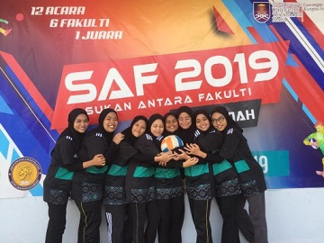
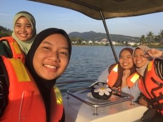

My Hobbies : What I Love to Do

I love sport very much. One of the sport that I always play is netball. I already played it since primary school
when I was 10 years old. Until now netball is one of my favourite
sport. I always join any competition or friendly if I have a chance.
There are others sports that I liked such as handball, badminton, volleyball and more.

Next, I also love to do the outdoors activities with my friends. My friends and I usually will cycling
at the Tasik Darulaman or joging at Taman Rimba.
Other than that, I also love to picnic.
It is because, I love to cooking. So, I will cook several types of food for my friends.
I love to see they are enjoyed with the food
that I have cooked.